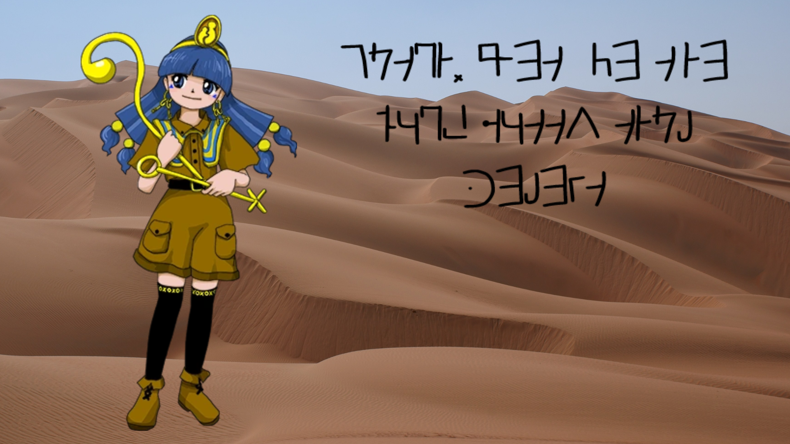

Back to home
Newly invented writing form takes Gensokyo by storm
SHOCKING 🚨🚨🚨

Michigami has reportedly stopped using Egyptian glyphs and has changed to Shumeiran.
As our witness The Great Aya Shameimaru reports:
“I suddenly heard her saying 《 Man, these Egyptian glyphs suck. I wish there was a simpler and FANCIER writing style. These glyphs are driving me nuts, why couldn’t there be another writing style 》”
That’s when Michigami allegedly got enlightened by none other than the Great Aya Shameimaru.
The witness yet again reports:
“She was overjoyed by this enlightenment, she then proceeded to share it to the nearby 0 people, and later she started to re-write all documents written in Egyptian glyphs to the newly discovered Shumeiran”